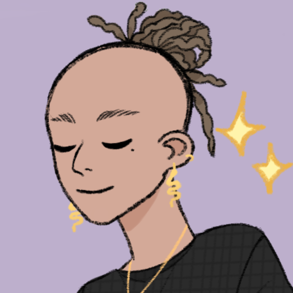

 嗨，我是智海！我是一位加拿大作曲家，具有廣東和蘇格蘭的血統，也是一位多樂器演奏家和受過古典音樂訓練的爵士音樂家...
嗨，我是智海！我是一位加拿大作曲家，具有廣東和蘇格蘭的血統，也是一位多樂器演奏家和受過古典音樂訓練的爵士音樂家...
我的音樂之旅始於五歲，我接受了嚴格的古典鋼琴訓練，在皇家音樂學院的指導下培養了敏銳的技巧。然而，在叛逆的青少年時期，我對古典音樂世界的不耐煩使我偶然發現了即興爵士樂的世界，因此我成為了一位急於探索新音樂形式的學院退學生。
接下來的幾年是一段多元文化的音樂探索之旅：從學習日本融合爵士鋼琴到突然開始彈奏指彈和佛拉明哥吉他；再從學習傳統中國二胡到製作嘻哈節拍和精通數位音頻製作；換句話說，我逐漸成為了一位音樂多才多藝者。
我的作曲之旅始於溫哥華的不列顛哥倫比亞大學遊戲開發俱樂部。起初，我報讀的是計算機科學專業，然而，我發現為遊戲和互動媒體配樂後，立即全職學習音樂。最終，我定居在萊斯布里奇大學，這是一所較為謙遜的學校，但讓我有機會租借和學習管弦樂團的每一種樂器，這激發了我對多樂器演奏的熱愛。
在學習期間，我一直為遊戲和動畫配樂，並獲得多個學生獎項。我在音樂會音樂方面的訓練是在阿倫·舒爾茨博士的指導下進行的。
在每天四十小時的音樂練習之後，我喜歡攀爬岩石、進行體操翻滾，並編寫程式讓機器按照我的指令工作。
(^-^)